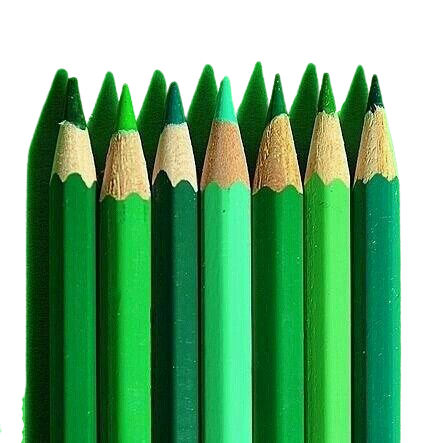

Skills / Talents

My talent or skill is more on arts like a graphic designer
because I saw Myself as a beautiful like an art I like arts so much
that's why I always put a lot of efforts on creating stuffs like
presentation design or how it will be looked like. I have a lot
of ideas on my mind on creating websites on how it will be looked or
what we called the visuals I have Aesthetic mind for creating stuffs
I'am creative for crafts, DIY, and more I can say that every one of
my works has beauty on it and put more efforts.